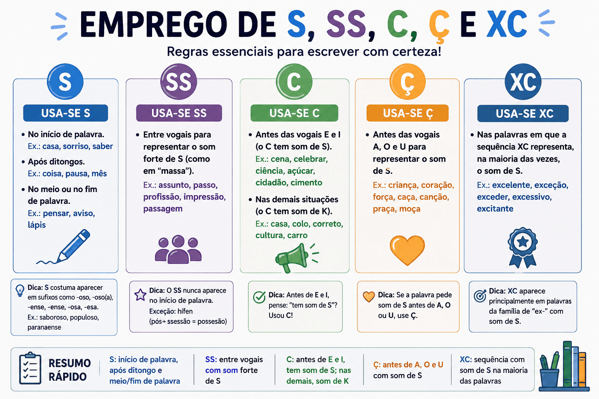

Emprego de S, SS, C, Ç e XC: regras, exemplos e exercícios
O emprego de S, SS, C, Ç e XC gera dúvidas porque a relação entre som e escrita não é sempre direta. Um mesmo som pode ser representado por grafias diferentes, e uma mesma letra pode apresentar valores sonoros distintos.
Para escrever com segurança, é importante combinar regras de posição, reconhecimento de famílias de palavras, atenção ao significado e consulta a fontes ortográficas. Nem toda escolha pode ser resolvida apenas pela pronúncia.

Por que essas grafias causam dúvidas?
O som /s/, como o início de “sapo”, pode aparecer com diferentes representações. As barras indicam que estamos falando de um som, e não apenas do nome de uma letra.
| Grafia | Exemplo |
|---|---|
| S | Sapo. |
| SS | Passar. |
| C | Cidade. |
| Ç | Laço. |
| XC | Excelente, em pronúncias usuais do português brasileiro. |
Há outras representações desse som, como o X em “próximo” e o SC em “nascer”. Nesta página, o foco está em S, SS, C, Ç e XC.
“Casa” não exemplifica S com som de /s/
Em “casa”, o S entre vogais representa normalmente o som de /z/, como em “zebra”. Compare: casa e caça.
Emprego da letra S
O S apresenta diferentes valores sonoros. No início de palavras como “sapo” e “semente”, representa /s/. Entre vogais, em palavras como “casa”, “mesa” e “aviso”, representa normalmente /z/.
Em final de sílaba, sua pronúncia também varia conforme o contexto e a variedade linguística. A escrita não muda apenas porque os falantes realizam esse som de maneiras diferentes.
Adjetivos com os sufixos “-oso” e “-osa”
Os sufixos -oso e -osa, frequentes na formação de adjetivos, são escritos com S.
- Carinho → carinhoso, carinhosa;
- Perigo → perigoso, perigosa;
- Fama → famoso, famosa;
- Gosto → gostoso, gostosa.
Nesses exemplos, o S entre vogais tem som de /z/. A regra explica a grafia do sufixo, não uma representação do som de /s/.
Formas de “querer” e “pôr”
Algumas formas desses verbos e de seus derivados merecem atenção:
- Quis, quiser, quiséssemos;
- Pus, puser, pusemos;
- Compus, compuser;
- Propus, propuser.
Não se deve concluir que todas as formas de “querer” e “pôr” contenham S. O objetivo é reconhecer as formas específicas acima.
S depois de ditongo: uma pista com limites
Palavras como coisa, pausa e lousa são escritas com S após um ditongo.
Isso não constitui uma regra para toda palavra nessa posição: foice tem C, e traição tem Ç. Use os exemplos como grupos de estudo, sem transformar a semelhança em regra absoluta.
Emprego do dígrafo SS
O SS é um dígrafo: duas letras representam um único som. Na ortografia portuguesa, ocorre entre vogais e representa /s/.
- Passar;
- Assunto;
- Possível;
- Profissão;
- Necessário;
- Missão.
S entre vogais
“O vaso caiu.”
O S representa normalmente /z/.
SS entre vogais
“O passo foi lento.”
O SS representa /s/.
O som não resolve sozinho a escolha
Não é correto afirmar que todo /s/ entre vogais exige SS. Compare passo, laço e tecido.
Famílias que ajudam a memorizar
- Passar → passagem → passageiro;
- Professor → professora → professorado;
- Possível → possibilidade → impossibilidade;
- Necessário → necessidade.
O SS não aparece no início de palavras portuguesas da ortografia corrente. Ao separar sílabas, suas letras ficam em sílabas diferentes: pas-so, as-sun-to.
Emprego da letra C
Diante de E e I, o C pode representar o som de /s/.
- CE: cedo, cebola, certo;
- CI: cidade, cinema, tecido.
Diante de A, O e U, representa normalmente /k/, como em casa, copo e cultura.
A vogal seguinte não determina toda a grafia
Saber que C diante de E ou I representa /s/ não significa que todo /s/ nessas posições seja escrito com C.
- C: cedo, cidade;
- S: seda, sinal;
- SS: passeio, possível.
A regra de posição explica o valor sonoro de uma grafia, mas não substitui o conhecimento da palavra.
Emprego do Ç
O Ç é o C acompanhado de cedilha. Representa /s/ diante de A, O e U.
- ÇA: caça, calça, praça;
- ÇO: laço, almoço, esforço;
- ÇU: açúcar, açude.
Na ortografia corrente do português, não se emprega Ç antes de E ou I nem em início de palavra.
Alternância entre C e Ç
Algumas famílias e formas verbais alternam C e Ç para representar /s/ diante de vogais diferentes.
- Começar → comecei;
- Almoçar → almocei;
- Conhecer → conheço;
- Vencer → venço.
Compare: “começar” tem Ç diante de A; “comecei” tem C diante de E. Não se escreve “começei”.
Emprego da sequência XC
A sequência XC aparece em palavras cuja grafia precisa ser reconhecida em conjunto. Em exemplos como “excelente”, pode corresponder a /s/ em pronúncias usuais do português brasileiro.
- Excelente;
- Excelência;
- Exceder;
- Excesso;
- Exceção;
- Exceto;
- Excerto.
Não generalize esse valor sonoro para toda ocorrência de XC. Em “excursão”, por exemplo, a sequência não tem a mesma realização de “excelente”.
“Exceção” e “excesso”
Exceção
Algo que se afasta de uma regra ou de uma situação geral.
Grafia: XC e Ç.
Excesso
Quantidade que ultrapassa um limite ou o necessário.
Grafia: XC e SS.
Memorizar apenas o início “exc-” não resolve a escrita da palavra inteira. É necessário observar todas as posições que geram dúvida.
Terminações “-ção”, “-são” e “-ssão”
Essas terminações aparecem em muitos substantivos, mas não são intercambiáveis.
| Palavra relacionada | Substantivo | Grafia em destaque |
|---|---|---|
| Organizar | Organização. | Ç. |
| Educar | Educação. | Ç. |
| Decidir | Decisão. | S. |
| Compreender | Compreensão. | S. |
| Discutir | Discussão. | SS. |
| Permitir | Permissão. | SS. |
| Imprimir | Impressão. | SS. |
Essas relações ajudam a organizar o vocabulário, mas nem sempre há conservação literal das letras da base. Famílias de palavras também apresentam alternâncias históricas e morfológicas.
Palavras que costumam gerar dúvidas
| Forma correta | Grafia inadequada | Ponto de atenção |
|---|---|---|
| Exceção. | Excessão. | XC e Ç. |
| Excesso. | Exceço. | XC e SS. |
| Necessário. | Necesário. | C e SS. |
| Acesso. | Aceço. | C e SS. |
| Profissão. | Profição. | SS. |
| Excelente. | Exelente. | XC. |
| Comecei. | Começei. | C antes de E. |
| Discussão. | Discução. | SS. |
Palavras diferentes que estão corretas
Uma palavra parecida com outra não é necessariamente um erro. A escolha deve considerar o significado.
“Calçada” e “causada”
- Calçada: “Os pedestres caminharam pela calçada.”
- Causada: “A interrupção foi causada pela chuva.”
“Causada” não é uma grafia incorreta por si só. É uma forma do verbo “causar”, com sentido diferente de “calçada”.
“Sessão”, “seção” e “cessão”
| Palavra | Sentido | Exemplo |
|---|---|---|
| Sessão. | Reunião ou período de realização de uma atividade. | A sessão de cinema começou. |
| Seção. | Divisão, parte ou setor. | Consulte a seção de Gramática. |
| Cessão. | Ato de ceder. | A cessão do espaço foi autorizada. |
“Caçar” e “cassar”
- Caçar: procurar ou perseguir caça, entre outros sentidos.
- Cassar: anular ou retirar determinada autorização ou direito.
Nos casos em que a pronúncia coincide, o contexto é indispensável para escolher a grafia.
Quadro-resumo das grafias
| Grafia | Orientação | Cuidado |
|---|---|---|
| S. | Pode representar /s/ ou /z/, conforme a posição e a palavra. | Não trate “casa” como exemplo de /s/. |
| SS. | Representa /s/ entre vogais. | Nem todo /s/ entre vogais é escrito com SS. |
| C. | Representa /s/ diante de E e I. | A regra não determina a grafia de toda palavra com esse som. |
| Ç. | Representa /s/ diante de A, O e U. | Não ocorre diante de E ou I nem no início de palavra. |
| XC. | Ocorre em palavras como “excelente” e “excesso”. | Seu valor sonoro não é idêntico em todas as palavras e variedades. |
Como estudar ortografia com mais segurança
- Identifique sua dúvida: marque a posição exata que precisa ser confirmada.
- Observe a estrutura: procure sufixos, formas verbais e palavras relacionadas.
- Confira o significado: veja se existem palavras semelhantes com sentidos distintos.
- Consulte uma fonte: use o VOLP para a grafia e um dicionário para significado e exemplos de uso.
- Registre uma frase: estudar a palavra em contexto ajuda a fixar a escolha.
- Retome seus erros recorrentes: faça revisões curtas com as palavras que mais geram dúvida.
Na revisão de redações e atividades
Separe a avaliação do argumento da revisão ortográfica. Depois de organizar as ideias, releia o texto procurando palavras cuja grafia você costuma confundir.
Uma pronúncia regional não determina, por si só, a escrita. A ortografia segue convenções compartilhadas entre diferentes maneiras de falar.
Resumo para revisar
- A relação entre som e grafia não é sempre direta.
- O SS ocorre entre vogais e representa /s/.
- O C representa /s/ diante de E e I.
- O Ç representa /s/ diante de A, O e U.
- O S apresenta diferentes valores sonoros.
- XC exige atenção à palavra inteira e à pronúncia no contexto.
- Famílias de palavras ajudam, mas também apresentam alternâncias.
- Palavras parecidas podem ser corretas e ter sentidos diferentes.
- A consulta ortográfica complementa o conhecimento das regras.
Quiz sobre S, SS, C, Ç e XC
Selecione uma alternativa por questão e clique em “Verificar respostas”.
Questão 1 — Grafia correta
Qual palavra está escrita corretamente?
Questão 2 — Alternância entre C e Ç
Qual forma do verbo “começar” atende à ortografia padrão?
Questão 3 — Som do S
Em qual palavra o S entre vogais representa normalmente o som de /z/?
Questão 4 — Atenção à palavra inteira
Qual alternativa apresenta duas palavras corretamente escritas?
Questão 5 — Ortografia e significado
Complete: “Consulte a ______ de Gramática do site”.
Questão 6 — Limite das generalizações
Qual afirmação está correta?
Questão 7 — Palavras distintas
Qual frase emprega “causada” adequadamente?
Questão 8 — Terminações
Qual substantivo relacionado a “discutir” está corretamente escrito?
Conclusão
O estudo de S, SS, C, Ç e XC exige distinguir regras de posição, padrões de formação e escolhas próprias de cada palavra. Uma regra sobre o som de uma letra não determina automaticamente toda a escrita.
Observe palavras relacionadas, considere o significado e confirme dúvidas em fontes ortográficas. Esse procedimento torna a revisão mais precisa e evita generalizações que produzem novos erros.
Perguntas frequentes
Quando se usa SS?
O dígrafo SS ocorre entre vogais e representa o som de /s/, como em “passar” e “assunto”. Isso não significa que todo /s/ entre vogais seja escrito com SS.
Pode haver Ç antes de E ou I?
Na ortografia corrente do português, não se emprega Ç antes de E ou I. Nessas posições, o C já pode representar o som de /s/.
Toda palavra com som de /s/ entre vogais usa SS?
Não. Esse som também aparece em grafias como C, em “tecido”, e Ç, em “laço”. A escolha depende da palavra e de sua formação.
“Exceção” e “excesso” são escritos da mesma maneira?
Não. “Exceção” contém XC e Ç. “Excesso” contém XC e SS. É importante observar a palavra inteira.
“Calçada” e “causada” podem estar corretas?
Sim. “Calçada” pode designar a passagem de pedestres. “Causada” é uma forma de “causar”. São palavras diferentes, e a escolha depende do sentido.
Onde consultar a grafia de uma palavra?
Consulte o Vocabulário Ortográfico da Língua Portuguesa, disponibilizado pela Academia Brasileira de Letras, e um dicionário para verificar o significado e os usos.
Continue estudando Língua Portuguesa
Referências e fontes de consulta
- ACADEMIA BRASILEIRA DE LETRAS. Vocabulário Ortográfico da Língua Portuguesa .
- PORTAL DA LÍNGUA PORTUGUESA. Acordo Ortográfico de 1990: Base III, distinção gráfica entre S, SS, C, Ç e X .
- BECHARA, Evanildo. Moderna gramática portuguesa. Consulte as seções sobre ortografia e formação de palavras.
- CUNHA, Celso; CINTRA, Lindley. Nova gramática do português contemporâneo. Consulte as seções sobre ortografia.
Explore outros conteúdos
Continue seus estudos acessando outras seções do site Mestre Kira: